Context & my role
Loop is a B2B analytics platform for restaurant operators. But before an operator could see a single number in Loop, we needed data from their POS, accounting software, delivery apps, review platforms, and a dozen other places.
The problem: getting that data into Loop wasn't really a product experience. It was a CSM sending emails, updating spreadsheets, jumping on calls, and working out a slightly different setup for every customer. Across 50+ integration types (and growing), the process had quietly become a collection of workarounds held together by people.
And it showed. Of the 68 customers who said they wanted to connect their stack, only 8–10 actually made it through.
So the challenge wasn't just to redesign integrations. It was to turn a process that depended on people into a product that could run on its own.
What I owned
- User Researcher — dug through 2,419 customer calls and 183 support threads to find where integration setups were actually breaking down.
- Systems & IA Designer — mapped 70+ bespoke connector flows into 6 reusable patterns, then designed Connect around them: a 4-step setup journey, an upfront delegation layer, live status tracking, and the workspace operators use to manage their connections.
- UI & Content Designer — owned UI and content end-to-end, including interface copy grounded in the language customers were already using with us.
Secondary & field research: the numbers
Quantitative reality check
| Metric | Key insight | Strategic takeaway |
|---|---|---|
| 0% | Zero external wizard completions | Out of 165 external users visiting the connectors page, zero completed the existing wizard. The setup wizard was effectively an internal-only tool. |
| 96% | The delegation reality | 96% of restaurant operators who purchase Loop never execute technical setup themselves. It almost always gets passed to an IT delegate. |
| 124x | Doubt-driven repeat actions | 33 users clicked "Copy email" 124 times, and a dedicated "I added the email again" button existed purely to soak up user uncertainty. |
The invisible triangle of dependencies
An operator trying to get their data into Loop had to juggle three parties, asynchronously and invisibly:
- The IT Delegate — forwarded a link mid-flow with zero context, and forced to create a full Loop account just to see instructions.
- The Vendor Rep — account managers at Toast, Qu, or Harri who had to enable exports behind closed doors.
- Loop's CS Team — manually nudging via email threads, with no shared in-product visibility.
Four problems the research surfaced
- Account bloat — forcing IT contractors into permanent admin roles just to read a 2-step guide.
- Unbounded latency — spinners promised seconds; vendor export enables took 5–7+ business days.
- Whose move is it? — 3 parties waiting on each other with zero shared state visibility.
- Silent failures — feeds died quietly upstream; users only noticed a month later in broken reports.
Primary research: voices of users & personas
2,419 call recordings analyzed · 183 support email threads audited
The Operator / GM (96% delegation rate)
"Are you able to pull that from QSRSoft? I'm going to forward this to my IT guy."
Mindset: Owns the business outcome and the Loop contract. The moment a screen mentions credentials, API keys, or SFTP, they delegate. They strongly resist cluttering their workspace by adding outside IT contractors to their permanent user seats.
The IT Delegate
"I'm going to fumble around and misrepresent things... just give me the exact steps."
Mindset: An external consultant or fractional IT manager. They land mid-flow with zero platform context. They don't want another login or a new UI to learn; they need a single standalone link with step-by-step instructions and copy-paste parameters.
The Third-Party Vendor Rep
"Please allow 3–5 business days for our integrations team to process the SFTP export."
Mindset: Account reps at Toast, Qu, or Harri. They have no relationship with Loop and won't respond to Loop directly. They only act when the customer emails them with the exact required phrasing.
The Internal CSM
"I'm trying to explain connectors, but then I have to explain that Toast is included in their tech stack..."
Mindset: Acting as a human routing switchboard. Spends 60% of their week emailing customers to ask "Did your Toast rep enable SFTP yet?" Needs the system to track who holds the ball automatically.
The breakthrough: the "Step 0" solution
Eliminating account bloat for one-time tasks
Our call audits exposed a fundamental flaw in standard B2B onboarding: the buyer wasn't the person doing the setup.
Loop required those consultants to become full users just to access a setup guide — unnecessary invites, account creation, and privacy friction before they could even start. So we added a zero step before any other setup begins.
Intent check: the setup dialog opens by asking, "Are you setting this up now, or delegating to an IT/vendor partner?"
{kind=link}
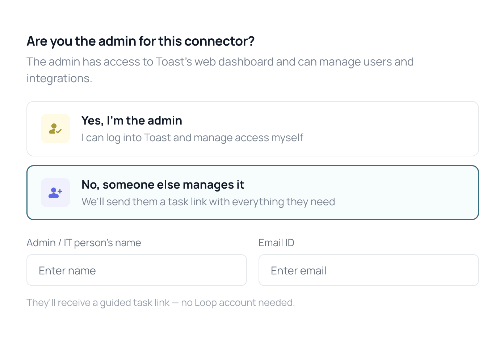
Old way vs. new way:
- The old way — forced registration: Operator lands → tries to understand an interface full of words like SFTP and APIs → must add IT guy as a user → IT guy receives the invite → creates a password → lost in the full UI → eventually figures it out and finishes setup.
- The new way — Step 0 delegation engine: Operator lands → one simple question ("Are you the admin for this connector?") → delegates it to IT → IT guy receives a standalone, no-login guide with full steps → completes the visual guide → smooth handoff to a Loop CSM for access verification.
{kind=link}
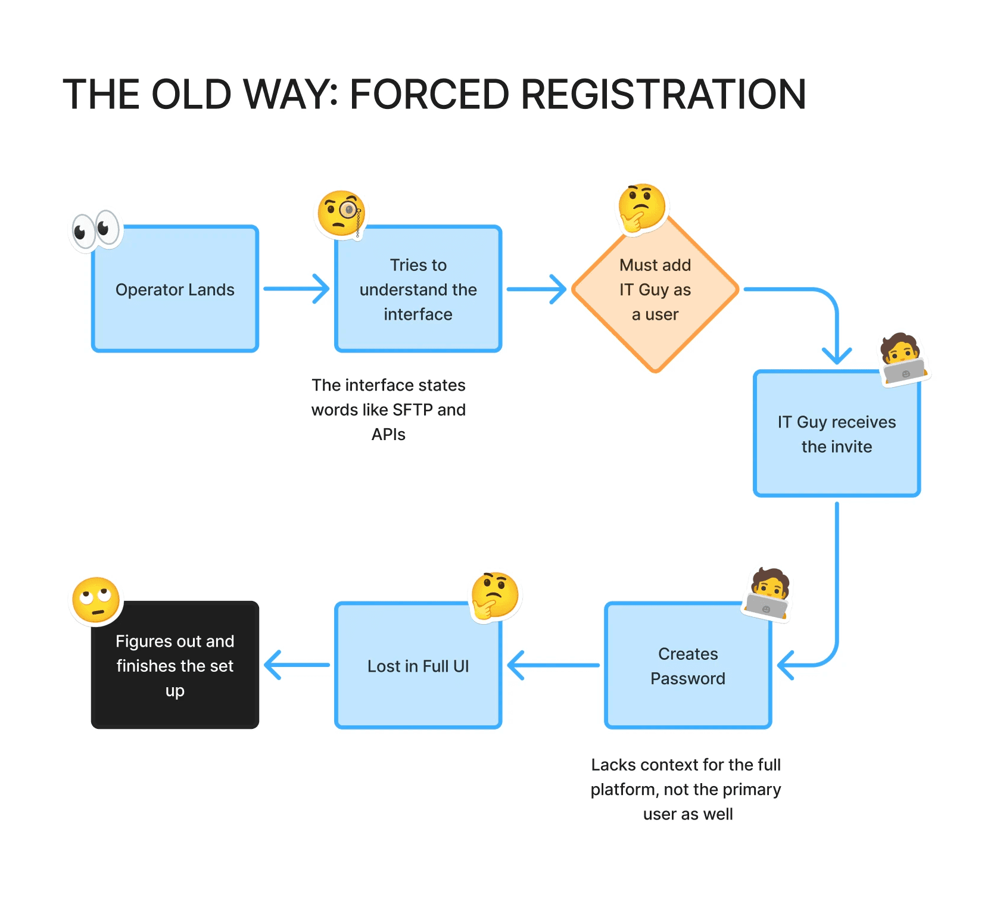
{kind=link}
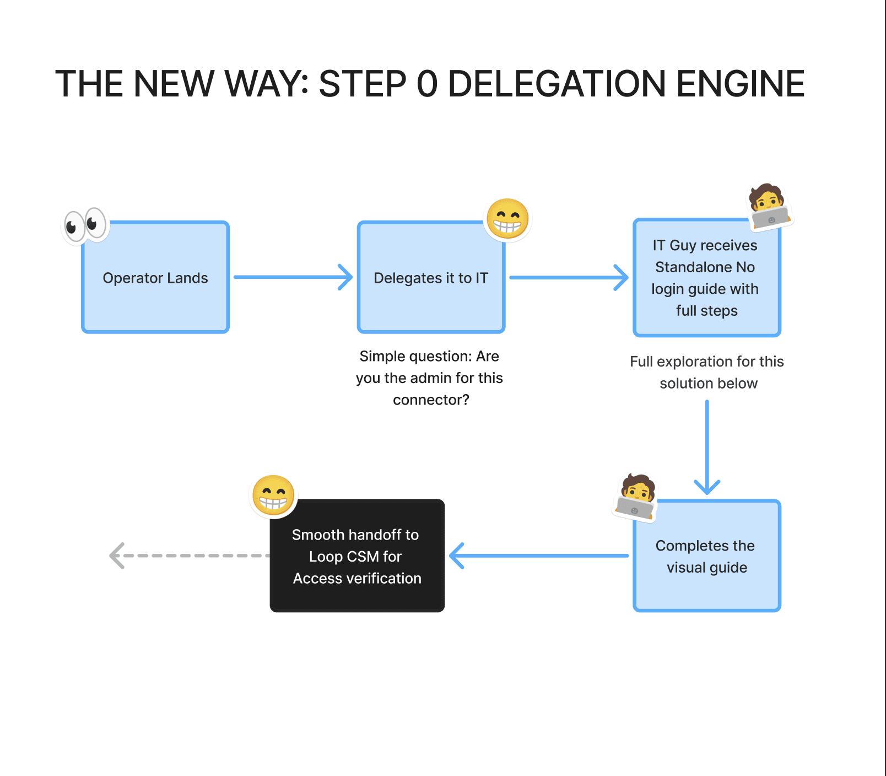
Three concepts for what to send the IT delegate
Idea 1 — The in-portal browser extension (killed)
- Concept: An interactive Chrome extension the IT delegate installs. When they open Toast, QuickBooks, or Google Business, it overlays tooltips on the third-party UI to highlight the exact buttons to click.
- Why we killed it: It solved guidance but created a mess. Asking an external contractor to install an extension and grant invasive browser permissions before delivering any value adds instant friction. And building and maintaining custom DOM scrapers for 70+ evolving third-party portals was an engineering nightmare we couldn't justify.
Idea 2 — Audio & video guides, Loom-style (killed)
- Concept: Embedded video walkthroughs or audio tracks so the delegate could listen in the background while switching tabs.
- Why we killed it: It broke under real-world behavior.
- The pacing trap: users don't work at the speed of a video; they'd constantly tab back and scrub to find where they left off.
- Content mismatch: many steps weren't UI clicks — they were pre-formatted email templates for vendor reps. You can't dictate a 3-paragraph technical email over audio.
- Production & tracking overhead: CSMs were already overloaded, and maintaining hundreds of videos across 50+ changing portals wasn't sustainable. Worse, video gave zero insight into whether a user had completed a step or got stuck.
Idea 3 — The step-locked interactive standalone link (what we built)
- Concept: A no-login standalone URL sent directly to the delegate's inbox.
- Why it won:
- Zero authentication friction — opens instantly: no account, no password, no software to install.
- Step-locked visual clarity — high-contrast, annotated screenshots of third-party screens with highlighted step indicators, paired with 1-click copyable email templates for vendor reps.
- Progress tracking & self-paced control — users mark each discrete step as done at their own pace, giving Loop full visibility into where the task is, without guessing.
- Built-in "Request Help" lifeline — if a portal looks different or a step fails, a "Get Help" button lets the delegate request CSM intervention or trigger a joint call right from the guide.
{kind=link}
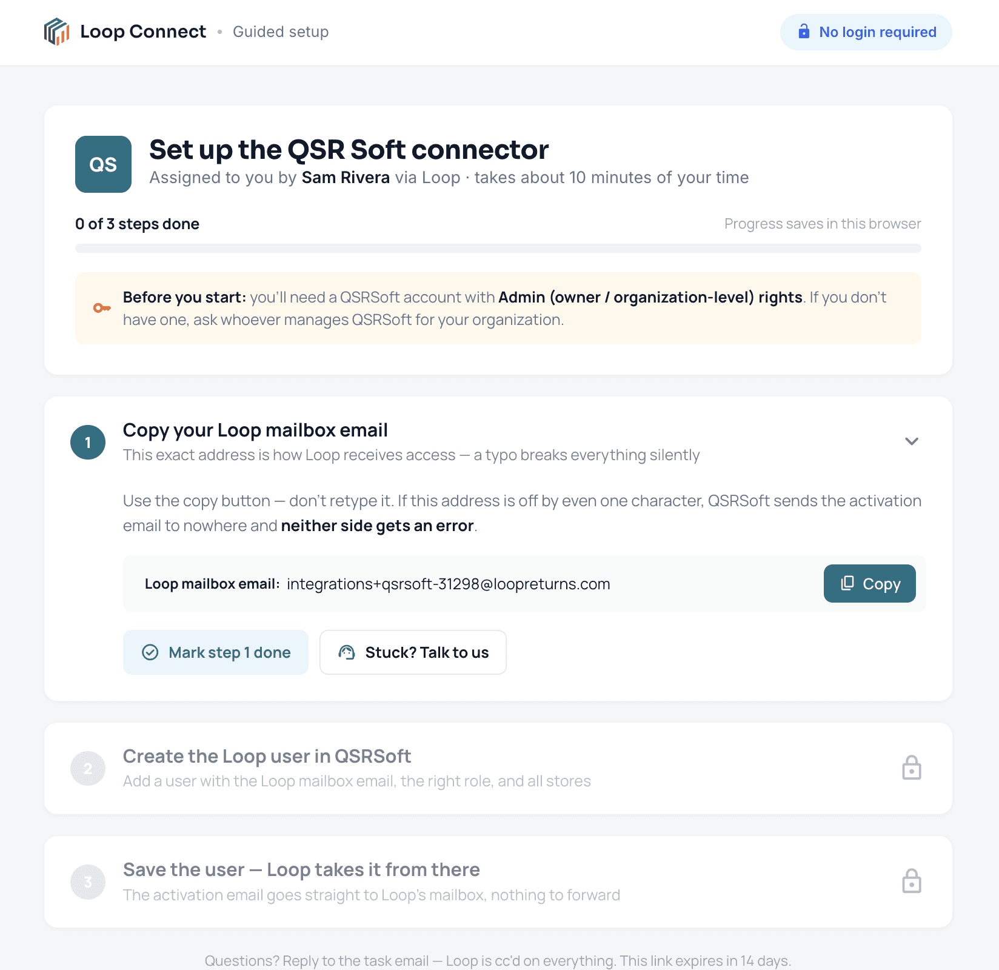
How might we…
How might we turn 70+ hand-held integration flows into one self-serve journey across three parties, without losing trust or handoff visibility?
The 6 core connector patterns
Rather than designing 70+ bespoke flows, we distilled them into 6 reusable interaction patterns, all built on the same 4-step backbone:
| # | Pattern | How it works |
|---|---|---|
| 1 | Zero-Touch (identity confirmation) | Loop already holds platform keys (e.g. Yelp, Ovation). The user or delegate just verifies account ownership and location mappings. |
| 2 | Two-Track (user + rep in parallel) | Quick user account access combined with a quiet, parallel vendor export ticket (e.g. Toast SFTP). |
| 3 | Authorize-Only (direct rep handoff) | The delegate triggers one prefilled email template; credentials flow directly from vendor rep to Loop — the customer never handles sensitive keys. |
| 4 | Single-Invite (add system user) | Granting dedicated user permissions to Loop (e.g. Google Business Profile). |
| 5 | Credential Paste (direct API keys) | Direct entry of Client IDs, Client Secrets, and Base URLs (e.g. QuickBooks, Toast API). |
| 6 | Bypass Track (smart branching) | Asks upfront: "Do you already hold a direct API credential?" Collapses a 4-link, 2-week vendor approval wait into an instant 10-second paste. |
The universal skeleton
{kind=link}
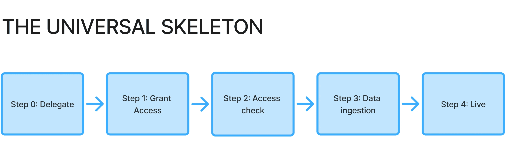
Older design versions
{kind=link}
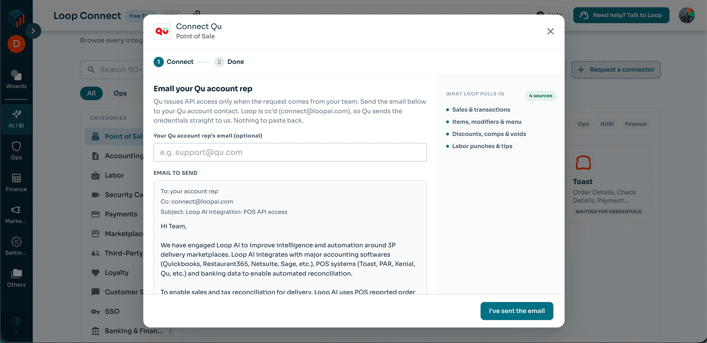
Current flow vs. ideal flow
Current flow (before):
- Discovery — AE captures tech stack; customer lands on a page with 100 options and an unguided integration grid.
- Attempt — operator gets stuck at credential prompts and abandons.
- Handoff chaos — CSM emails manual instructions; operator tries to add IT delegate to Loop.
- The black hole — customer sends a vendor email; Loop shows zero state changes.
- Silent churn — customer emails after 3 weeks asking "Is this live yet?", or churns quietly before seeing value.
Ideal flow (Connect):
- Console set — AE captures tech stack; the customer's actual stack opens pre-populated under "Ready to Connect". Other options stay hidden until there's intent to add more.
- Delegation — operator sends a no-login standalone guide to their IT delegate in under 10 seconds.
- Guided action — delegate follows exact visual guidance and CCs Loop on the pre-filled vendor request.
- Access check — Loop's backend validates credentials automatically: no self-attestation, no doubt-driven repeat clicks.
- Time-honest process — ownership flips to "Waiting on Loop"; real-time ingestion status streams into the persistent artifact workspace.
New flow
{kind=link}
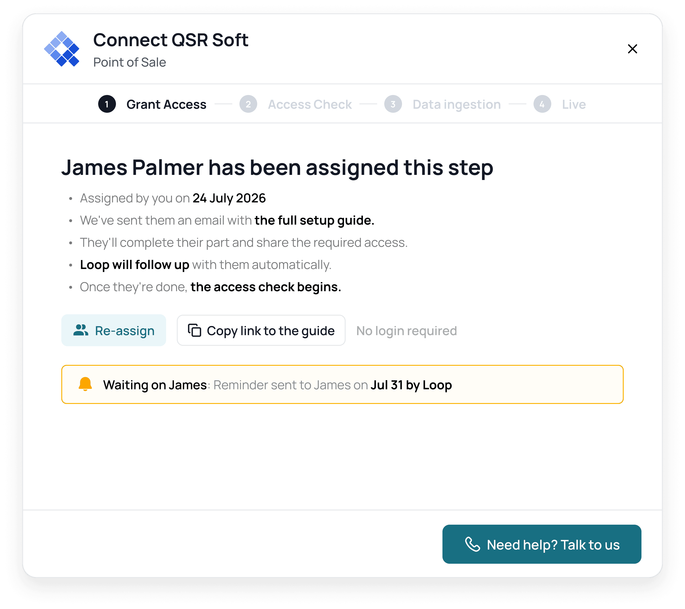
{kind=link}
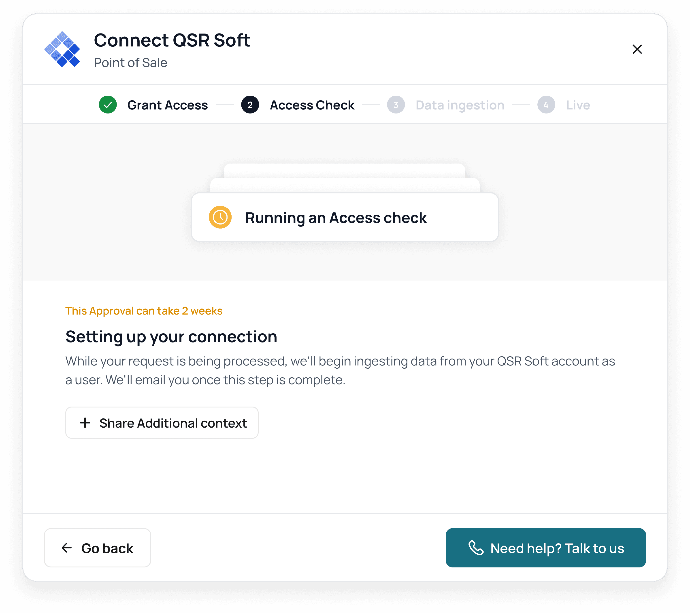
{kind=link}
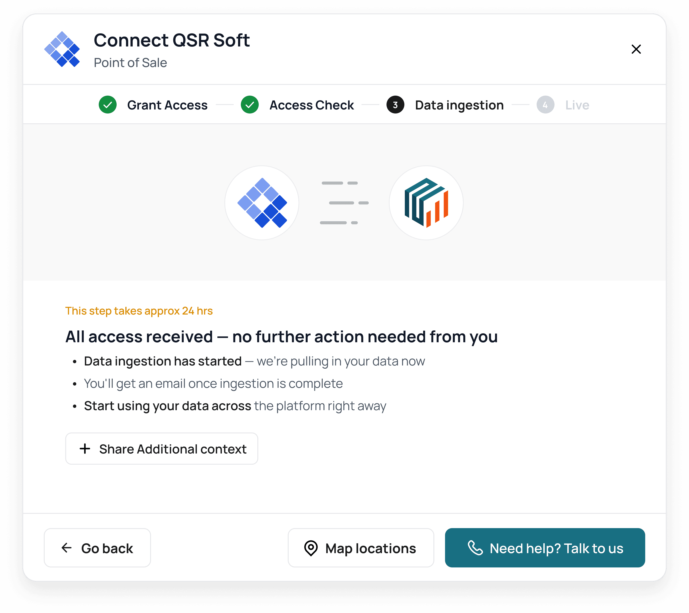
{kind=link}
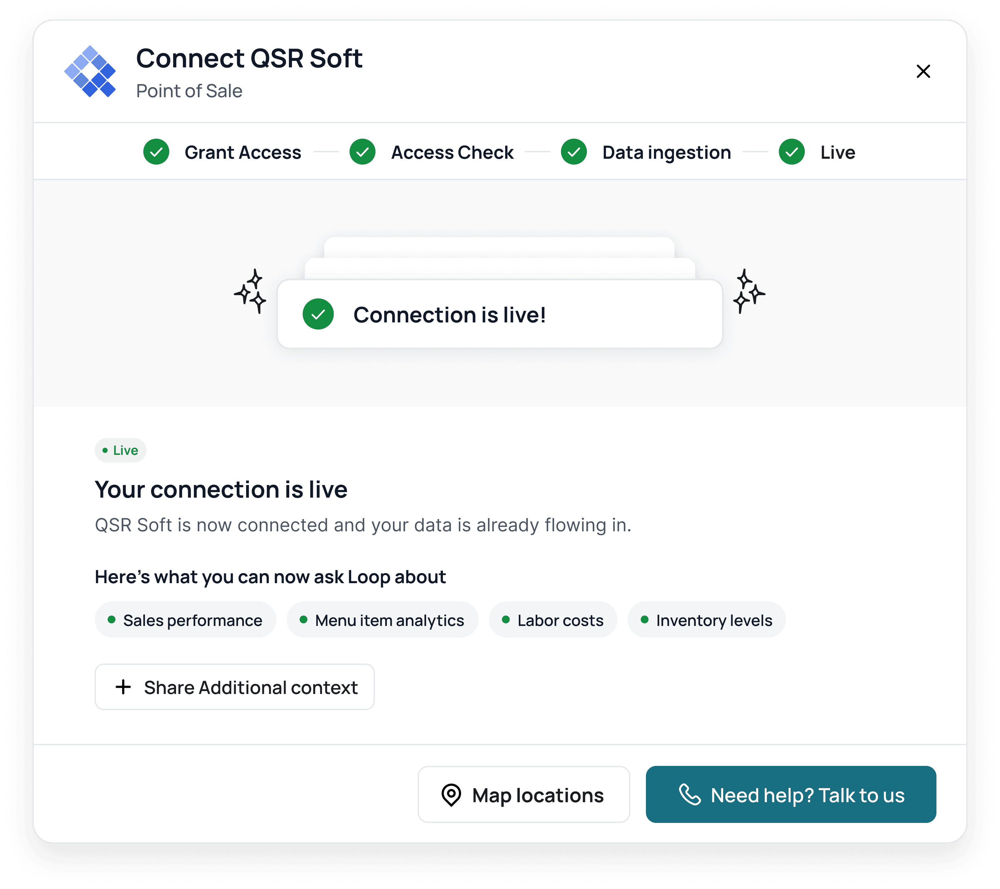
{kind=link}
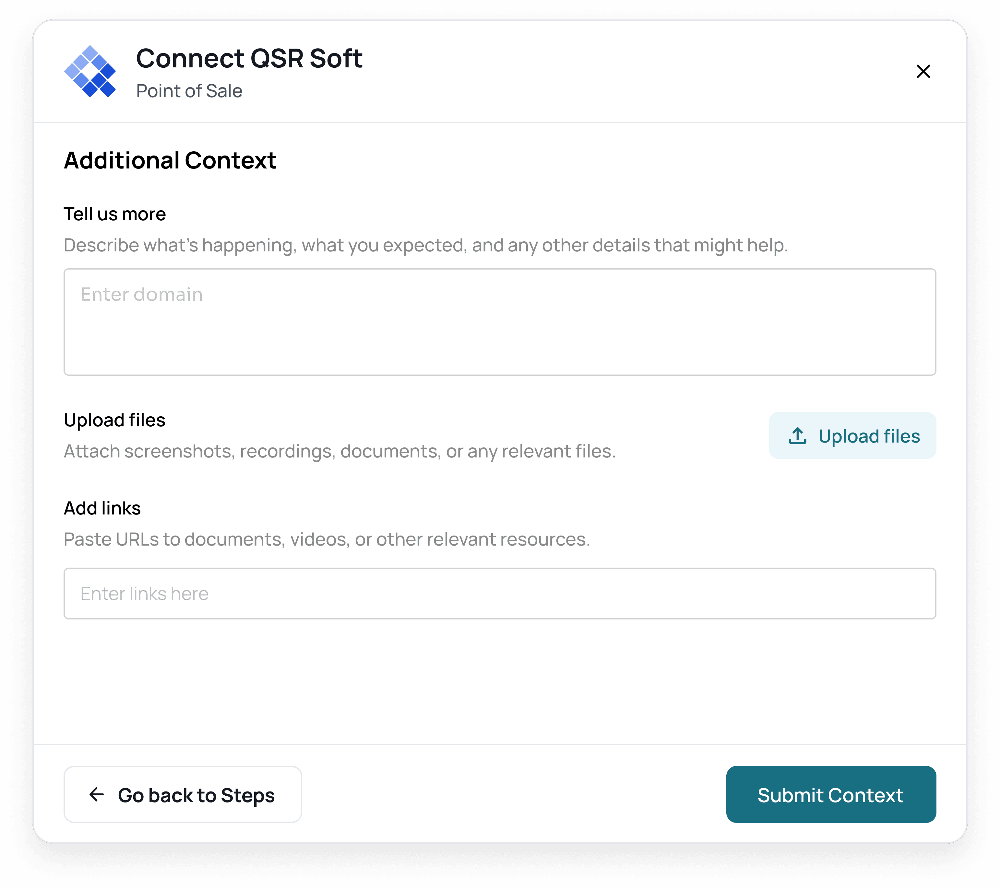
Designing for human friction: small solutions
Explicit "who-acts" state boundaries
Instead of generic "Pending" pills, every row and modal explicitly names the responsible party and a realistic elapsed duration (e.g. "Waiting on James — reminder sent to James on Jul 31 by Loop").
{kind=link}
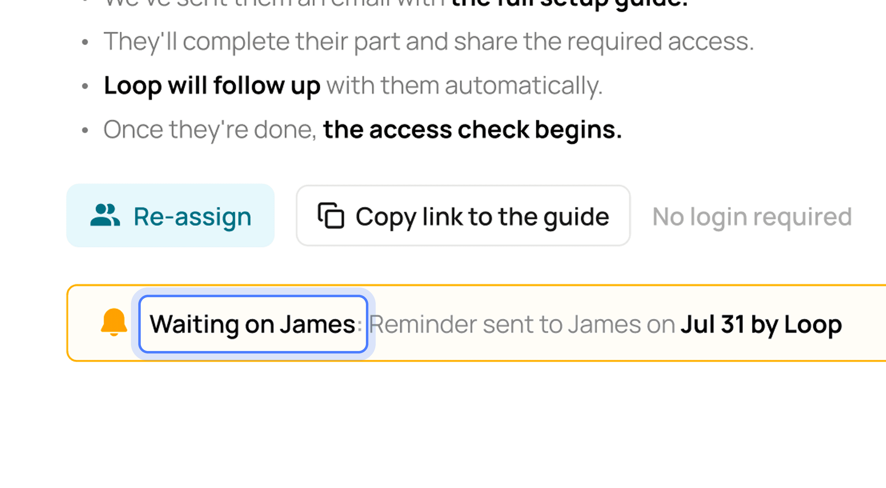
{kind=link}
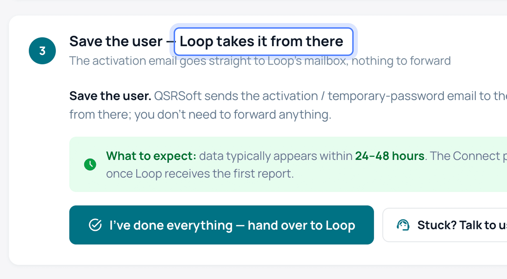
Time honesty & thresholds over fake spinners
Spinners promise seconds, but vendor approvals take days. We eliminated loading spinners entirely. When a task enters a vendor or backend queue, the system shows clear elapsed markers ("Step takes approximately 24 hrs"), communicating exactly how long it might take before the user can move forward.
{kind=link}
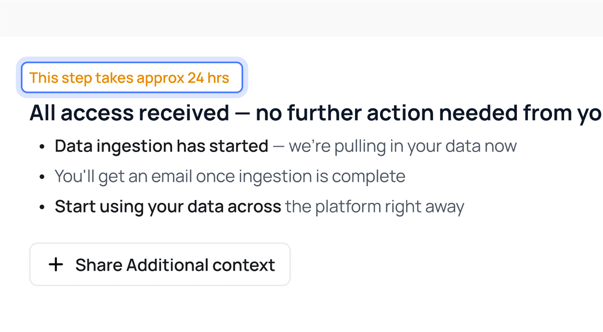
{kind=link}
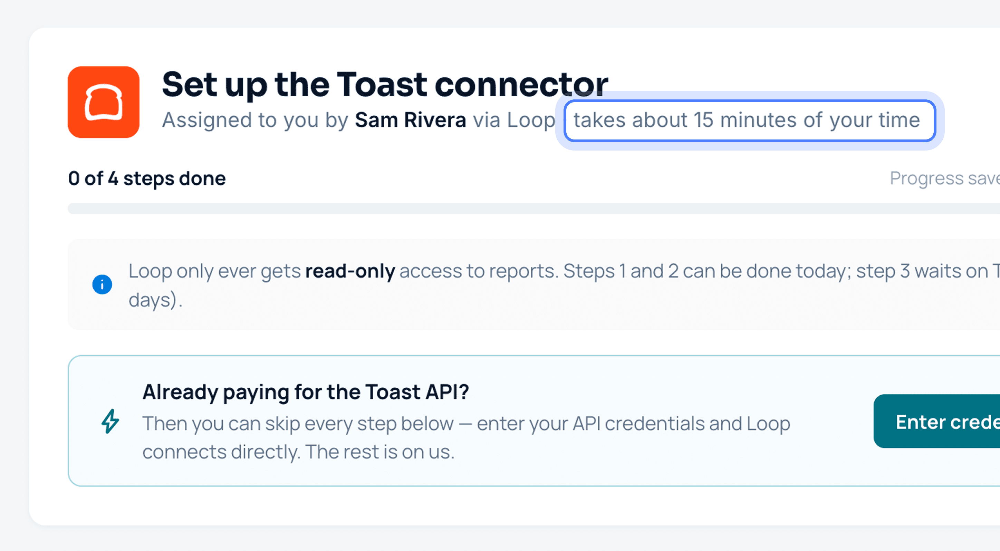
Backend access check over self-attestation
We removed the ambiguous "I added the email" button. Connect uses automated backend polling to verify permissions. If a setup fails, the flow regresses to the exact broken step with a specific diagnostic message ("Role granted was 'Site Manager'. Google Business requires 'Manager' permissions.").
{kind=link}
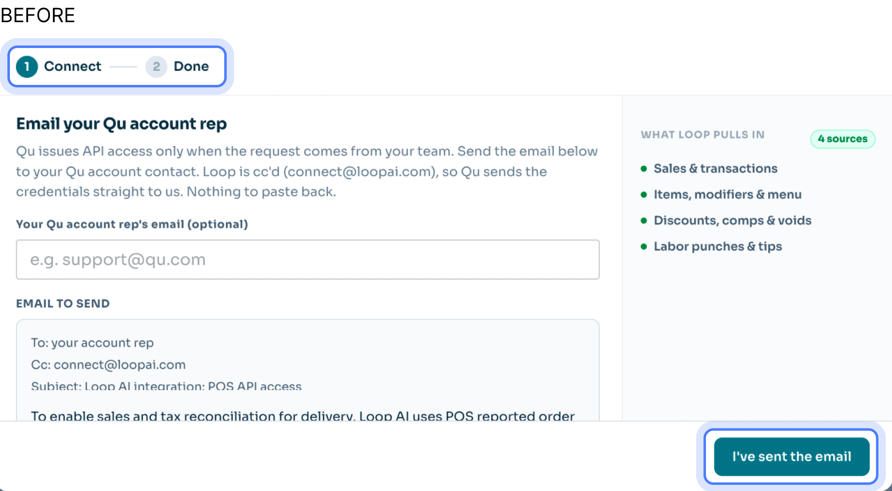
{kind=link}
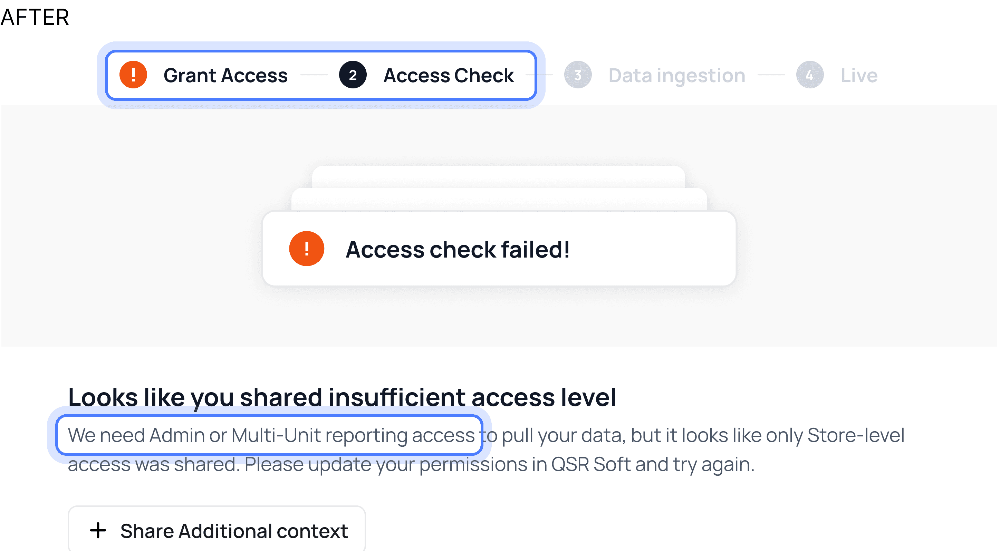
Final Connect page redesign
{kind=link}
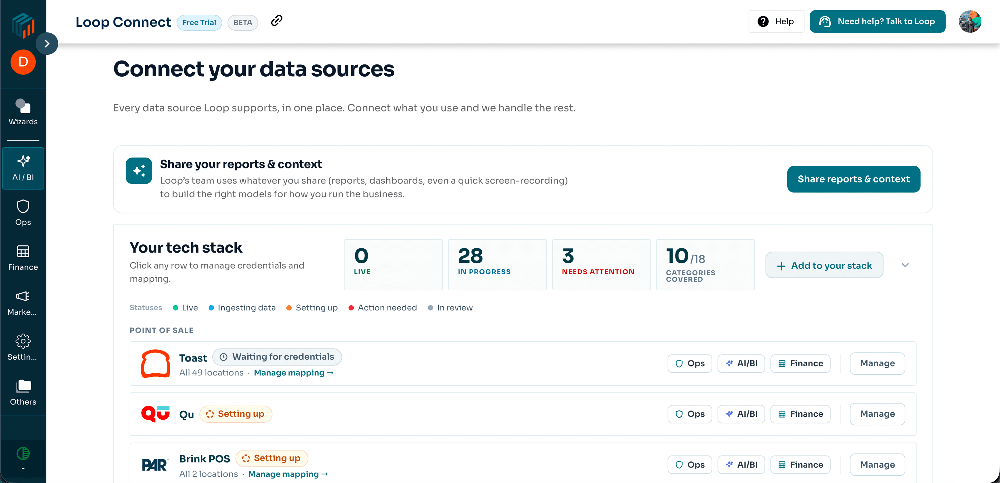
{kind=link}
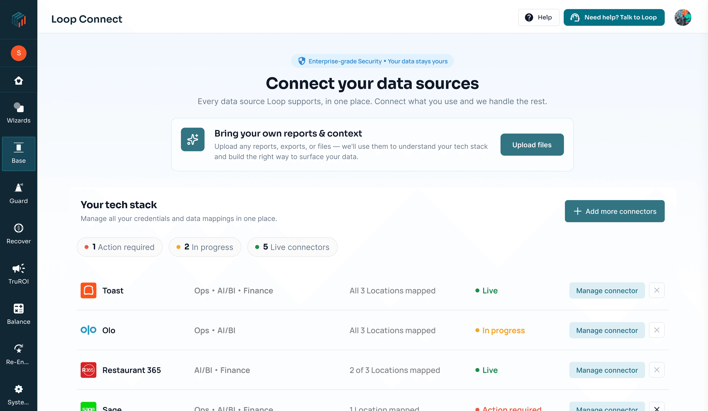